Now that you've learned
how to create object variables, and how
to use a constructor to initialize the fields of the object,
let's use Java's Font class as an occasion for review, and see if
you can apply what you remember to a different class.
If you are typing along with this chapter, open up MyFirstJavaApplet,
(from Week 1), and find the paint()
method. At the beginning of the method,
add this code to change the font used by your message to a larger font:
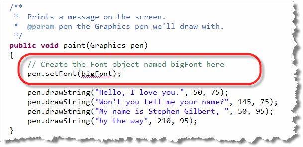
Creating Font Objects
As you can see, the Graphics class has a
setFont() method that works pretty much like the
setColor() method you met in the last section.
Now all we have to do is find out how to create a
Font object. How do we do that?
Doh!
We already know how to create a Font object!!!
We just use the Font constructor, whose name
is...you guessed it, Font().
When we look up the Font class in the Javadocs,
we see that there are two constructors:
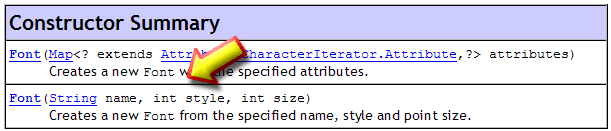
One looks completely incomprehensible, (to me too!), but the otherFont() constructor
requires three parameters—name, style, and
size—and each parameter is something that we know how to
supply, String and int parameters.
Let's look at the values we should supply.
Font Name
The first parameter to the Font constructor is
a String that contains one of these five names:
- "Serif"
- "SansSerif"
- "Monospaced"
- "Dialog"
- "DialogInput"
These are known as logical font names. (In the first version of Java, you could also use the names "Courier", "Helvetica" and "TimesRoman" as logical font names.) Starting with Java 1.2, you can also specify a specific physical font, such as "MS Comic Sans", or "Jokerman", but, as with HTML, this only works if the requested font is located on the user's machine.
As with HTML, you should normally use the platform-independent logical font names that will be replaced with Arial or Helvetica or New Times Roman, etc. depending upon the platform the application runs on, if you're going to distribute your program as an applet.
Font Style
The font style parameter is an int, but you should
always use one of the class constants that
have been predefined inside the Font class.
These work very much like the constants Color.RED,
etc. which are predefined inside the Color class.
The values you can use for this second parameter are:
Font.PLAIN,Font.BOLDFont.ITALIC, orFont.BOLD + Font.ITALIC
Using something like Font.PLAIN + Font.BOLD
doesn't make any sense, but it won't create a syntax error.
Make sure you get the capitalization right on these. Note that
the words PLAIN and BOLD are ALL CAPS, while Font is capitalized,
but also contains lowercase letters.
Font Size
The last parameter required by the constructor is the size of the Font. This is, theoretically, supplied as the point size for the font. Point size is a measurement used in printing. There are 72 points to an inch, and normal body text is usually 10 or 12 points.
In fact, Java's Font class seems to
use the short-cut of equating pixels and point size.
That works OK when your monitor is set to 72 dpi, but if
you use a higher resolution such as 96 or 120 dpi, which is
pretty common now days, your fonts will seem a little
too small.
The Results
Now that you know the arguments required to create a Font,
you should be able to finish off MyFirstJavaApplet.java yourself.
Let's say we want to use a half-inch high, bold, typewriter-style
font. How would you construct it?
All you have to do is replace the line in MyFirstJavaApplet.java that now contains a comment with the following:
Font bigFont = new Font("Monospaced", Font.BOLD, 36);
We use 36 for the size, because there are 72 points to the inch, so 36 is about a half-inch. The logical font name "Monospaced" represents typewriter-style fonts like Courier.
Warning : Make sure you don't accidentally transpose the
style and size parameters when you create a
Font object. Doing so won't create a syntax error,
but it does result in a font that is too small to see.
If you don't want to bother with the variable, you
can just create the Font object when you call
the setFont() method, like this:
pen.setFont(new Font("Monospaced", Font.BOLD, 36));
Here's the result, running on my computer:
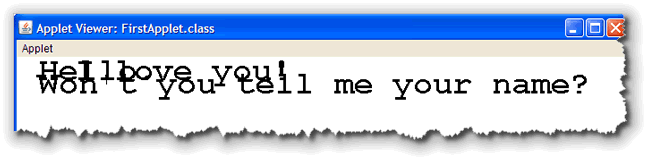
Whoops! What's Wrong?
As you can see, changing the font creates all kinds of problems.
Why? What's wrong?
Remember that with graphical programs, output is not line oriented. You have to specify exactly where the output should appear. That means the output that looked fine with a 12-point font, is all scrambled when you change to a larger font.
For now, we'll fix this just by adjusting the parameters we used when
printing the output. (I've done this here, more or less, using plain old
trial-and-error.)
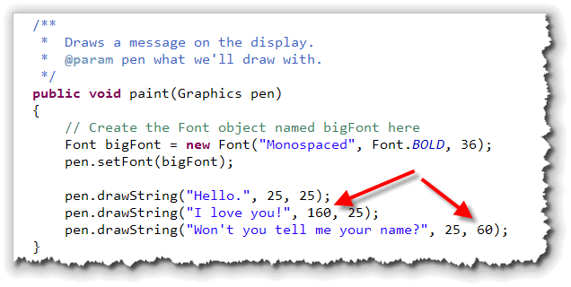
Later, you'll see how to accurately measure the height of each line of text and display the output accordingly. Here's what the program looks like after adjusting the output spacing: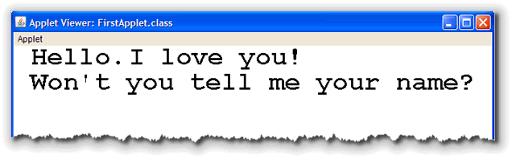
Fonts and ACM ConsoleProgram
Since adjusting the spacing for an applet is fairly time consuming, you might be wondering if you could just write a console program, and change the fonts for that, instead.
The answer is, yes and no!
You can't change the font used for the system console (the console
used by System.out.println(), but, you can easily
change fonts with the graphical ACM IOConsole, used by the
ACM ConsoleProgram class. When you do that, the console
object itself keeps track of the font size and spacing, so you
don't need to do any kind of tracking.
Here's a line that changes MyFirstACMConsoleApp so that it uses
a different font than the default:
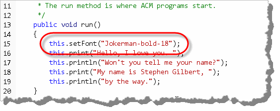
Not only does the ACM program adjust the line size for you, but it also creates theFont object. The ACM setFont()
method takes a String parameter consisting of the font name,
the style and the size, separated by hyphens as shown here.
Although it is easier to use fonts with your ACM programs, the
output is quite restricted when compared to applets (and graphical
applications, which you'll learn about a little later). With ACM
ConsolePrograms:
- You can only use one font in the output. Every line is displayed using the last font set.
- You cannot change the colors of different parts of your output.
- You cannot adjust the spacing to create different effects.
Mutators and Accessors
Objects contain several different kinds of methods:
- Some methods carry out an action, but don't change
the object that carries out the action. I'll call
these procedures. The
drawString()method, or the variousprint()methods are these kinds of methods. - Some methods just perform a calculation
and return the calculation to the person who called the
method. In many programming languages, these are
called functions, and I'll continue to use that
term informally. All of the methods in the
Mathclass are these kinds of methods. - Some methods return information about a particular
object. These kinds of methods, called accessors,
may tell you the number of characters in a
String, or the amount of red or blue inside aColorobject. 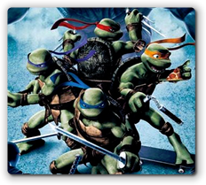
Finally, some methods carry out an action, and make a change to the object that carries out the action. These are called mutator methods, because they change the object itself, just like a genetic mutation does. ThesetColor()method is a mutator, because after you call it, theGraphicsobject continues to draw in the new color; it's been changed.
The signature for a procedure, (one that simply carries
out an action), and the signature for a mutator,
(a method that changes the state of an object), usually start
with the keyword void. All of the methods
you've used so far in this chapter, such as drawString() or
setColor(), have been these kinds of methods.
Methods that provide information about an object, and methods that perform a calculation, are often called "value-producing" methods, because you can use the method in any situation where you could use a value of the same type. Both functions (methods that perform a calculation), and accessors (methods that provides some information about an object) are value producing methods. I'll often call both of these kinds of methods "functions" as a shorthand description.
Recognizing Value-Producing Methods
If you look through the Javadocs for the Font
class, which I've reproduced below, you'll see that there are
a few value-producing methods. The secret is to look in the left-hand
column, in the Method Summary section. If the column does
not contain the word void then it is a "function."
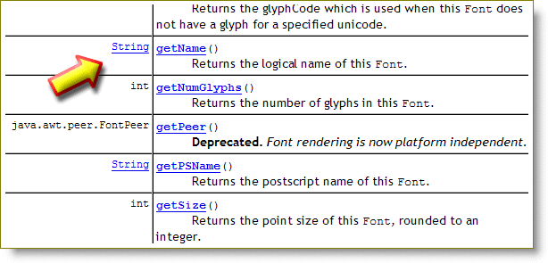
As you can see, almost every method, (except one), produces a value.Let's look at these three simple ones:
int getSize()
// Returns point size of font
String getFontName() // Returns font name
int getStyle()
// Returns font style
Using Accessor Methods
There is only one way to call a procedure or simple method:
receiver.methodName(parameters);
For instance, to call the simple method
drawString() you write:
pen.drawString("Hi Mom", 24, 27);
With value-producing methods, you have a choice of three different ways to use the method. You can:
- ignore the returned value
- store the return value in a variable
- use the return value directly
To ignore the returned value, simply call the method as you would a simple method. This is common in the C/C++ world, where functions typically both carry out an action and return a status code.
Even in C/C++, ignoring a return value is a bad habit
to get into, and you should avoid it. 99.99% of the time when I see
code where the return value is ignored, it is a mistake;
Don't do it.
If you want to store the value, and use it later, you must create a variable of the correct type, and then use the method to initialze the variable. Here are some examples that show the correct and incorrect way to do it:
// This is OK, getSize() returns an int
int size = curFont.getSize();
// This is OK getFontName() returns String
String name = curFont.getFontName();
// NO! getStyle() returns an int
String style = curFont.getStyle();
To correct the last example, change the type of the variable named
style from a String to an int.
Even though you use names like Font.BOLD and
Font.ITALIC for the style when you create your
Font objects, the value is stored as a
simple int, and that's what's returned by
getStyle().
If you only need to use the value temporarily, you can
avoid creating a variable, and just use the function directly.
For instance, if you want to print the name of the Font
used in your applet, you can write this:
pen.drawString(curFont.getName(), 10, 20);
rather than this:
String name = curFont.getFontName();
pen.drawString(name, 10, 20);
Measuring Classes
Let's end up this chapter by looking
at three "helper" or "utility" classes that are used alongside
the GUI classes we'll be working with in future weeks:
Point, Dimension,
and Rectangle.
The Rectangle Class
The Rectangle class is often used when talking
about the size and position of a visual component, such as
a button or a label, on the screen. For such objects,
there are four relevant pieces of information:
- x : the number of pixels from the left-hand side of the component's container to the left-hand edge of the component.
- y : The number of pixels from the top of the component's container to the upper edge of the component.
- width : The number of pixels across the component in a horizontal direction.
- height : The number of pixels across the component in a vertical dimension.
The Rectangle class bundles together these four
pieces of information in one convenient package.
Creating a Rectangle
Even though the Rectangle class is often used to
specify the size and position of graphical components, it is
not a graphical component itself, so we can't display it
in your applet. You can, however, display the "state" of the rectangle,
just by using its toString() method as we'll see shortly.
The easiest way to see this is to use an interactive environment like the Dr. Java Interactions Pane, which is what I'll do here.
The Rectangle class has several constructors. The one
you'll use most often, (the 4-parameter Rectangle constructor),
wants its parameters passed as x, y, width, and height. In the screenshot
shown here, I've created a Rectangle object that is
100 units wide, 150 units high, and is located at the point
10,10. I've named the object variable r1:
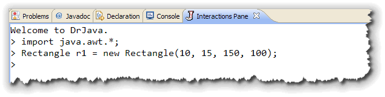
Note, also, that since theRectangle class is located in the
java.awt package, I needed to import that package into my
Dr. Java session, before I created any Rectangle objects.
Inspecting the State
All Java objects have a toString() method that usually
displays information about each of the object's attributes in a human-readable,
(that is a String) format. In an interactive environment like
Dr. Java, you can call the toString() method and display the
results in the Dr. Java console, by simply leaving off the semi-colon
when calling the accessor method, like this:
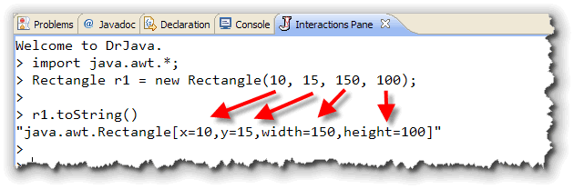
When Dr. Java prints out the values of the object r1, notice that the parameters supplied (10, 10, 150, 100), are now stored in the fieldsx, y,
width, and height.
Remember that a value producing method, like the toString()
accessor, returns a value to the caller. Such values are expressions
which Dr. Java displays, surrounded by quotes, to indicate that it is a
String value.
For most Java objects, you can also invoke the toString()
method by using concatenation. In fact, in Dr. Java you can simply type the name
of the object and hit Enter, without ending the line with a semi-colon. When
you do this, Dr. Java will call the toString() method and then
print the results exactly as if you'd called the console println()
method:
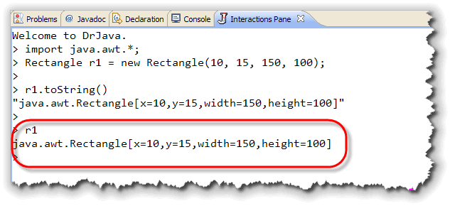
Notice that the state of the object is not surrounded by quotes when you do this.Rectangle Mutators
If you look at the documentation for the Rectangle
class, you'll see several mutator methods: methods that
change the state of the object itself.
Here are three of them:
// Change all four fields
void setBounds(int x, int y, int width, int height)
// Change the location (x,y) fields
void setLocation(int x, int y)
// Change the size (width,height) fields
void setSize(int width, int height)
Mutator methods do not return a value; they change the object
you are using. That means that you call a mutator method just like
a simple procedure. Here's an example:
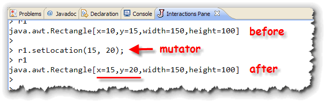
Notice how both thex and y object attributes
are changed by the mutator methods.
Rectangle Accessors
Instead of using the toString() method, we can use the
other Rectangle class accessor methods to
examine the state of the object r1. Remember, an accessor
is a method that "tells you" about some part of the object's
state.
The Rectangle class has methods called getX(),
getY(), getWidth(), and getHeight(),
that allow you to find out the values in each specific field. (For
some reason, even though the fields themselves hold int
values, the accessor methods return doubles).
Let's try out an accessor method using Dr. Java. Type in the code below, and press Enter:
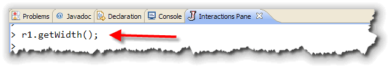
How come nothing is printed out?
Remember that when you call
a value-producing method, you can call it just like a simple
method, (as we did above). However, when you do that, the
returned value, (in this case, the width of the rectangle),
is simply discarded. Instead, you have to store the value
in a variable, or pass it to another method, like
System.out.println() like this:
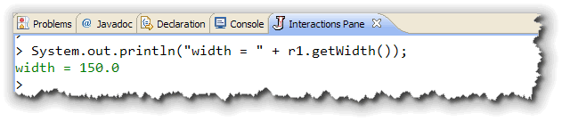
Instead of doing that, though, you can use the Dr. Java shortcut method. Remember that if you type in an expression, and leave off the semicolon, Dr. Java will evaluate the expression and print the result in the Interactions Pane window. This is ideal for testing out value-producing methods, as shown here: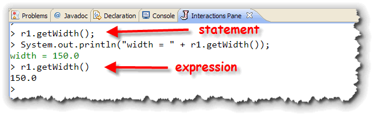
Note that in the screenshots, the statementr1.getWidth();
didn't do anything, while the expression
r1.getWidth() (no semicolon), printed out a value.
Public Fields
The fields inside the Rectangle class also have one
other unusual characteristic that's not found in most classes:
instead of being private, which is the normal state
for an instance variable, the Rectangle fields are
public. This means that you can directly
access the fields inside the object r1, including changing
the object just by assigning a new value, or reading the
current value, like this:
r1.width = 75;
r1.x = 10;
System.out.println("r1.x is " + r1.x);
Dimension and Point classes
also have public fields like this. The designers of
the Java class libraries, (folks like Joshua Bloch, for instance),
have loudly said that this was a real mistake:
"Several classes in the Java platform libraries violate the advice that public classes should not expose fields directly. Prominent examples include the Point and Dimension classes in the java.awt package. Rather than examples to be emulated, these classes should be regarded as cautionary tales. As described in Item 37, the decision to expose the internals of the Dimension class resulted in a serious performance problem that could not be solved without affecting clients."Effective Java, page 99.
Java's Component class makes use of the Rectangle
class to store the current size and position of any of
the objects on-screen. To retrieve the current size and position
of any Component, you send it the
getBounds() message and it gives you back a
Rectangle object.
Since the Applet class is a descendant of
Component, this works for your applets as well.
You can find out how wide and high your applet is by
calling its getBounds() method to retrieve
a Rectangle object, and then calling the
Rectangle toString() method to get a
String translation, like this:
public void paint(Graphics g)
{
Rectangle r = this.getBounds();
String rs = r.toString();
g.drawString(rs, 10, 25);
}
Note that to call an applet method, we use the name this
for the receiver. You could also just write: getBounds().
If you place this code in an applet, and then change the applet tag HTML width and height, you'll see something like this:
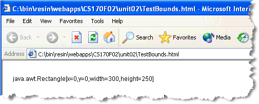
ThetoString() method helpfully prints out
the values of each field in the Rectangle object.
Since the applet is the "top-level" container, the x,y
fields are always 0, but the width and height
will change as you modify the applet tag.
The Dimension Class
The Component class also has methods that allow
you to set and retrieve just the height and
width of a Component, separately from
its position on your applet. These methods are getSize()
and setSize().
Although, technically, it should work, most browsers ignore the
setSize() method when it refers to an applet.
There is no easy and reliable way for an applet to size itself;
it always relies on the values set in the HTML applet tag.
Rather than using a Rectangle object, these methods
work with a class named Dimension. A
Dimension, like a Rectangle, contains
public fields that can be used directly. Instead
of four fields, like the Rectangle
class, the Dimension class has two:
width and height.
The Point Class
Just as you can change the size of a Component
without changing its position, you can also change the position,
without changing the size. The methods you use for this are
setLocation(), getLocation(), and
getLocationOnScreen().
These methods work with yet a third "helper" class, the
Point class. Just as a Dimension
contains only the height and width
fields that a Rectangle object would have, a
Point object contains only the x,
y fields.

Font and Friends Summary
- To create a
Fontobject, use a constructor, passing the arguments: family, style and size. - Use the logical
Stringfont family names: Serif, SansSerif, Monospaced, Dialog and DialogInput for maximum portability. Physical font family names are generally tied to the native operating system, and using them may lead to unexpected results. - Use the
Fontclass constants:Font.PLAIN,Font.BOLDandFont.ITALICto specify the font's style. You may also use the expressionFont.BOLD + Font.ITALICto get a bold-italic font. - Use an
intfor the font size. The size is nominally represented in printer's points, but actually uses pixels. If your screen uses 72 dpi, then 72 will be about an inch. In general, use 12 for the smallest fonts, and 18-24 for medium headings. - Pass your newly created
Fontobject to theGraphicssetFont()method (pen.setFont(myFont);) before drawing the text you want in thepaint()method. Inside theinit()method, you can specify the default font by using theComponent setFont()method like this:this.setFont(myFont);. - In ACM console programs, you can change the font used for the entire
program by using the
ConsoleProgramsetFont()method. Pass a singleStringspecifying the family name, the style and the size, separated by hyphens, and the ACM program will create theFontobject for you. - Objects, (like
FontandColor) contains methods that change their internal state, called mutators, and value-producing methods that report on the object's internal state, called accessors. - To use an accessor method, store the returned value in a variable, or use it as part of a calculation or method call.
- Three very simple utility measuring classes from the Java class
libraries are the
Rectangle,DimensionandPointclasses.Pointcontainsx,yvalues, whileDimensioncontainswidthandheight. TheRectangleclass contains all four.